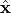
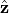
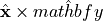
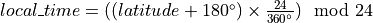

NEXOCLOM Goals and Requirements¶
Statement of Purpose¶
The Neutral EXOsphere and CLoud Model is a numerical model for simulating
collisionless exospheres and neutral clouds around astronomical bodies. These
bodies may be planets (in this solar system or around other stars), satellites
of planets, or small bodies. The exosphere may be surface-bounded or start at a
pre-defined (possibly spatially or time variable) exobase above the surface.
Users can use predefined or custom initial spatial and energy distributions from
the surface or exobase. Inputs to the model are defined in a plain-text .input
file. The documentation species the structure of the .input file, which
parameters are required, and default value for optional parameters.
A full test suite with unit, integration, and regression tests is implemented to ensure that physical processes are implemented correctly, changes in the code do not change or break functionality, and that saved results can be retrieved correctly.
High Level Requirements¶
Utilities¶
Configuration
Configuration file is a text file containing a set of
key = valuepairs.Filename is set by an environment variable.
Required variable:
savepath= path to directory where data is savedOptional variable:
database= Name of the TinyDB file containing the outputs database. Default =thesolarsystemmb.dbuseris required if it is not set by the operating system (e.g. with Windows)
Database Operations
sets the path to the database correctly
Format as a TinyDB record
Strip the input classes into dict with only floats, strings, ints, bools, and dicts.
One-to-one mapping between class and cleaned up version
Search
Builds a query only retrieves records that match the inputs.
insert
Only inserts records that aren’t currently in the table. This won’t be 100% foolproof since there could be multiple processes accessing the database, but that’s acceptable.
Table containing outputs information that can point back to doc_ids of the individual input classes
Input/Output¶
System geometry
Specify the system geometry either with a time stamp or specifying true anomaly angle, central meridian longitude, etc.
Central object (e.g., planet or Sun) for the simulation is fixed
StartPoint is either the central object or a satellite of the central object
For the constant step size model, all objects are assumed to be fixed. This is because each packet has to be launched in the same system configuration (especially the loss environment). Will need to give a demonstration/more complete explanation of why this must be true.
Energy distributions
Support for user defined sources either as a probability distribution or user-defined function
Spatial distributions
Support for surface maps in either solar-fixed or body-fixed coordinates
Saved results
Initial conditions specified by plain text input file in the form
parameter = valueor as a JSON file.Inputs will be saved in a NoSQL database
When the database is queried only outputs consistent with the queried inputs are returned.
Some input parameters may involve a comparison (e.g., 5º <= TAA < 6º)
Outputs need to be saved in a format that can be used by packages that allow for larger than memory datasets.
There should be a way to include customized source distributions specified by the user.
When doing fitted models, don’t need any of the inputs like packets or Input
Physics¶
Forces
Gravity
Radiation pressure
Loss processes
Coordinate systems
Solar-fixed
 in planet’s (starting point’s) equatorial plane toward Sun. If the object’s tilt is included this will not necessarily point directly at the Sun.
 in planet’s (starting point’s) equatorial plane duskward
in planet’s (starting point’s) equatorial plane duskward points along spin axis; 
longitude: angle from
 axis to projection of position vector
on XY plane. Increases in counter-clockwise direction
axis to projection of position vector
on XY plane. Increases in counter-clockwise direction0º = sub-solar point; 90º = dusk point, 180º = midnight, 270º = dawn
Local time increases counter-clockwise from 0h (midnight). 
Latitude ranges from -90º (south pole) to 90º (north pole)
body-fixed
TBD
Solar System Module¶
SSObject class
Objects that contain all the physical data for solar system objects needed by the nexoclom2
Required data
Object name
object type (star, planet, moon). Not really important.
What the object orbits (central object to be used for simulations that extend outside the Hill sphere
Names of satellites
radius
mass
GM (for gravitational acceleration)
semi-major axis
eccentricity
axis tilt
rotational period
orbital period
NAIF ID
Quantities with units stored as astropy quanitites
Data is pre-determined and stored in a text file included with the nexoclom2 package.
Sources for data need to be included (listed in the datafile).
If object not found, return object with unknown quantities as None
Function or class to object geometry relative to the Sun for a solar system object.
Can be determined either from a time stamp using SPICE kernels or from a specified planet true anomaly angle (TAA) or satellite orbital position.
Necessary quantities
Distance from Sun
Radial velocity relative to Sun
Object-Sun vector taking into account planet’s tilt.
Additional functions needed to access SPICE kernels.
Possible future work
Extended to include information about exoplanet systems.
Extract data from spice kernels when possible, especially for objects that aren’t in the included table.
Test Requirements¶
NexoclomConfig